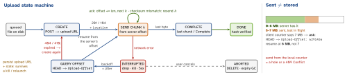

networking · folio
In one line: A big upload over a mobile network will be interrupted. Resumable: the server
keeps the bytes it has under an upload URL and reports its offset; after a drop the client
asks “where were we?” and continues from there. Chunked / multipart: the file is split into
parts that are sent, retried and checksummed independently, then assembled by an explicit
complete. On iOS a background URLSession hands the transfer to a system daemon —
from a file, never from Data.
Download PDF Print view LaTeX source


How it works
- Why: cells drop, NAT rows expire, the app is killed — restarting 500 MB at 90 % burns time, battery and data.
- Resumable = one sequential stream with a server-authoritative offset (IETF draft, tus, GCS). Multipart = N parts, any order, in parallel, assembled at the end (S3). Both need an upload id/URL persisted on the device.
- Integrity: a checksum per chunk (tus
Upload-Checksum→ 460 on mismatch; S3x-amz-checksum-*, CRC64NVME default) + a whole-file hash checked at complete. Hash first → server can dedupe (already have it: skip). - Retries: exponential backoff + jitter; on every resume re-read the offset. Chunk size trades request overhead against bytes re-sent after a failure.
- Progress:
didSendBodyData/task.progresscount bytes sent; show the server-acknowledged offset. Multipart: a parentProgresswith one child per part, weighted by bytes.
The protocols
| IETF draft | draft-ietf-httpbis-resumable-upload (-12, Jul 2026, not yet an RFC).
Server may answer the POST with 104 Upload Resumption Supported + Location;
offset: HEAD → Upload-Offset; append: PATCH, application/partial-upload,
Upload-Complete: ?1 on the last; cancel: DELETE. Also Upload-Length,
Upload-Limit, Upload-Draft-Interop-Version. |
| tus 1.0 | Tus-Resumable: 1.0.0. POST → 201 + Location; HEAD → Upload-Offset;
PATCH application/offset+octet-stream → 204 + new offset (409 if offsets differ);
DELETE; Upload-Expires. |
| S3 | Create → UploadPart 1–10,000 (5 MiB–5 GiB, last smaller; each returns an
ETag) → Complete with every PartNumber + ETag. Max object 48.8 TiB. Abort;
lifecycle AbortIncompleteMultipartUpload. Client: one presigned URL per part. |
| GCS | POST ?uploadType=resumable → session URI (valid 1 week); PUT chunks, multiples of
256 KiB, Content-Range: bytes 0-262143/*; 308 + Range = incomplete; status =
empty PUT bytes */SIZE. |
Server contract (what to ask the backend for)
Idempotent create (client upload id / Idempotency-Key) · offset is the server’s truth · size limits up front · auth on every chunk (re-signable URLs) · expiry + garbage collection of abandoned uploads · complete verifies the hash, then processing (scan, transcode) runs async → 202 + status URL.
Example — the IETF draft on the wire, then iOS 17
POST /uploads # Upload-Complete: ?1, whole file
<- 104 Upload Resumption Supported
Location: /uploads/7f3 # save it!
# ... connection lost ...
HEAD /uploads/7f3
<- Upload-Offset: 6291456, Upload-Complete: ?0
PATCH /uploads/7f3 # Upload-Offset: 6291456
Content-Type: application/partial-upload
Upload-Complete: ?1 # bytes 6291456..end
<- 200 OK # the original request's answer// iOS 17+: URLSession resumes by itself if the server
// speaks the draft; you can also pause and resume later
let task = session.uploadTask(with: req, fromFile: file)
task.resume()
task.cancel(byProducingResumeData: { data in
store.save(data) }) // nil: not resumable
if let data = store.load() { // file must be unchanged
session.uploadTask(withResumeData: data).resume() }On iOS
- iOS 17: upload tasks are automatically resumable when the server supports the draft (WWDC23 Build robust and resumable file transfers; interop version 3).
- Background session: Apple: “Only upload tasks from a file are supported
(uploads from data instances or a stream fail after the app exits).” Multipart: write each part to its own file —
uploadTask(fromFile:)sends the whole file. - Keep files in Application Support (not
tmp/Caches, which the system may purge). - RN:
fetchhas no resume. tus-js-client resumes in the foreground; background needs a native module on URLSession / WorkManager.
Traps
- Resuming from the client’s byte counter — bytes in flight were lost. Ask the server.
uploadTask(with:from: Data)in a background session — fails once the app exits.- S3 parts under 5 MiB (except the last) are rejected; unfinished uploads are billed until aborted — add the lifecycle rule.
- Presigned URL expired mid-upload → re-sign that part, don’t restart.
- “Chunked” ≠ HTTP/1.1
Transfer-Encoding: chunked— that streams one request of unknown length and resumes nothing.